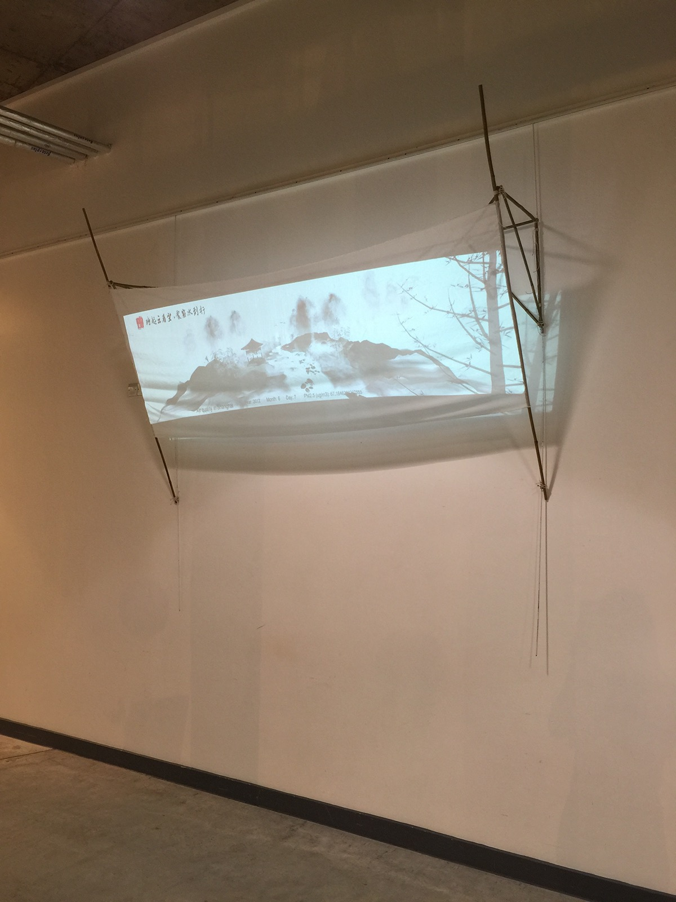

Mai
Created using Unity3D, Blender and Arduino
Summary
Mai is an interactive art installation focusing on the theme of the environmental issue in China. I have collected the daily average data of PM2.5 between 2012 to 2015 in Shanghai, visualizing them into Chinese watercolor painting. Two objects were placed in front of the painting, one is a lantern representing the human civilization and the other one is a bottle of the plant which represents nature. It’s the audience's choice to choose which object to interact with. If you get closer to the lantern, the painting will disappear in the dark. If you hold them or touch the plant, the plant will start to talk to you heart-to-heart.
Objective
PM2.5 is believed to be the main pollution causing the haze problem. Particles lower than or equal to 10 micrometers in diameter are so small that they can invade the lungs and potentially cause serious health problems. Ten micrometers is smaller than the width of a strand of human hair. Coarse dust particles (PM10) are 2.5 to 10 micrometers in diameter. When PM2.5 becomes higher on a particular day, the ink in the painting will become darker and mountains from distances will transform into shadows resembling smokes. When Pm2.5 lowers on a particular day, the ink will become lighter.I am trying to raise awareness of environmental protection by creating an aesthetic and interactive artwork through this art installation.
The mental pain comes from political covering and can be eased though psychological adjustment to transform people’s thinking or with a blind eye to the way of ostrich to escape. However if the environment issues hails from a political covering, not only is it a torture of human’s body but also the spirit. Because this is an infringement of human rights, denying the basic requirement of allowing a human to consume fresh air, for the well-being of their body while living under the jurisdiction of their trusted government, whom they paid taxes to and pledge their loyalty to the nation. Even the government still chose to prohibit some artists or media, “Haze Art” as a trend is gradually helping to raise public awareness these years. People begin to realize the serious problem of the environment. Only when the awareness of mass has been raised, the government will be forced to bow to public pressure and reform the energy structure and eventually solve the problem in the future.
Action

In-lieu with a fusion of Chinese calligraphy and arts, the ink resembles smog and polluted air. By visualizing particle matter in the air from 2012 in Shanghai, I want to show how smog influenced the environment in China. Past data of PM2.5 is not a waste that people will gradually forget but can be changed into things of value and aesthetical.
Exhibits

Digital Arts & Technology Final Projects Show
Plymouth University, 2016